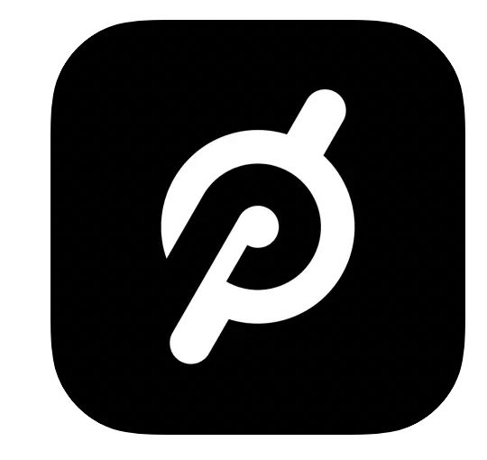
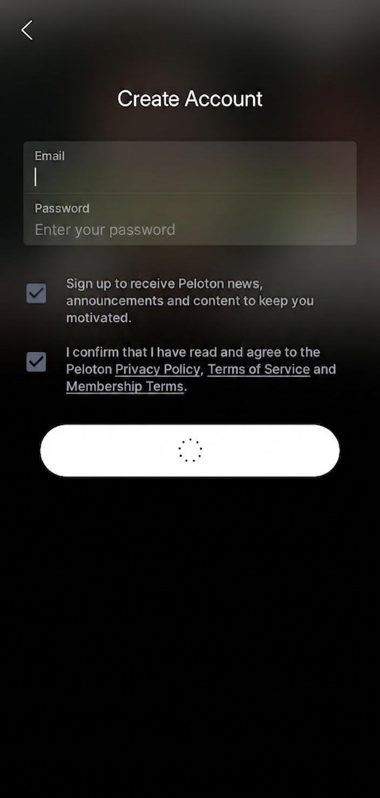
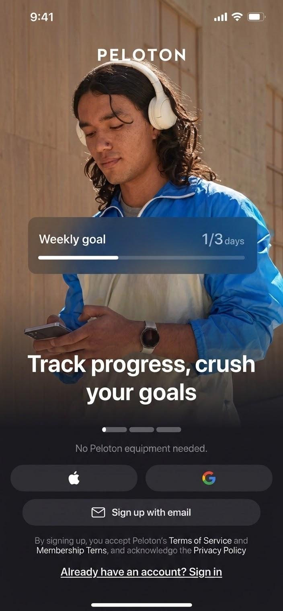
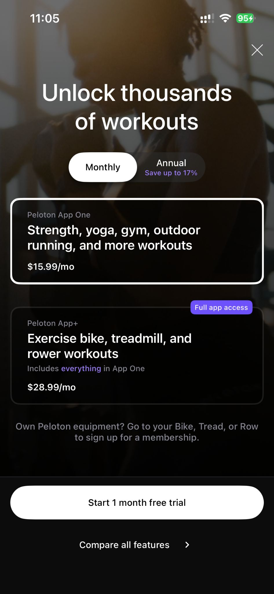

← All case studies

Subscription Revenue ResearchDual App Sign-up


01
Context & Background
- Apple rejected Peloton's ability to have an exclusive direct-payment flow, forcing the team to pivot its strategy.
- The new agreement required displaying an option to pay through Apple — but the team still needed to entice prospective members toward direct payment, which avoided Apple's cut of subscription revenue.

02
Methodology & Goals
Unmoderated Think-aloud Test with Prospects (8)
- Price & validation: do prospects understand the price difference between direct payment and Apple's flow, and who validates payment?
- CTA verbiage: reactions, choices, and sentiment toward the language used throughout each flow
- Sign-up flows: which flow — direct payment or Apple's — is more favorable, and why
03
Timeline
Phase 1
Project Kick-off
- Stakeholder meetings
- Determining method
- Creating research brief
- Gathering stakeholder input
- Designing screener & unmoderated guide
Phase 2
Conduct Research
- Getting Figma assets from designers
- Launching unmoderated test among 8 prospective members
Phase 3
Analysis & Deliverable Prep
- Qualitative coding of interviews
- Behaviors, themes & high-impact moments turned into insights and recommendations
Phase 4
Share Out
- Report created and shared broadly with internal and external teams
- Collaboration with product & design to prioritize and refine features based on recommendations
04
Unmoderated Interview Summary
Insight
The CTA "Join Now" was unclear — participants didn't realize it led to a different sign-up flow through Peloton's website.
Recommendation
Make the CTA clearer that it leads to Peloton's website for the app purchase, and that Peloton — not Apple — is validating payment.
Insight
Prospects didn't know there was a price discrepancy between the two payment options, causing surprise and confusion once told.
Recommendation
Explain price differences before prospects enter either Apple's or Peloton's payment flow on the sign-up page.
Insight
Once past the sign-up page, Apple's third-party flow was more favorable, since starting a free trial was clearer.
Recommendation
Tweak Peloton's flow to mimic Apple's, if the team continues offering both sign-up paths.